| 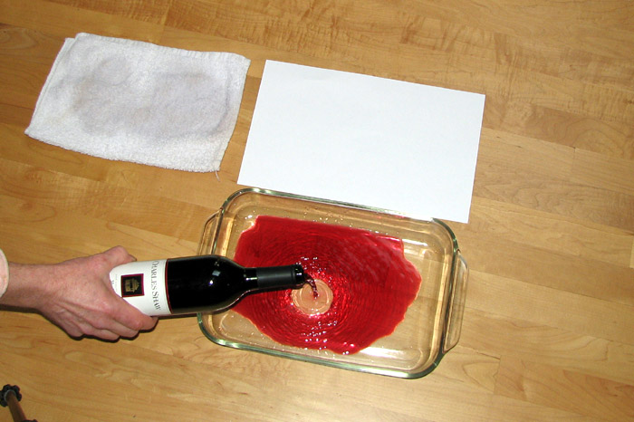 |
Supplies:
|
| 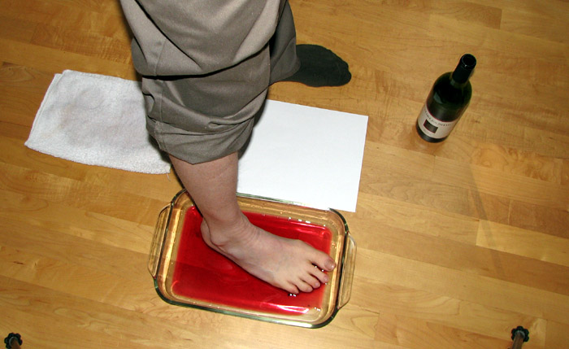 |
Arrange your supplies as shown. Place your foot in the wine. Remove your foot and shake gently
over the pan for about 30 seconds. Place your foot carefully on the paper. Gently transfer your
full weight to that foot then even out the weight between your two feet. The goal is to have enough wine on your foot to make a print but not so much that the wine bleeds out into the paper. This depends somewhat on how absorbant your particular paper is. Here is a handy form if you have Adobe PDF Reader: FORM Be sure to set your print settings to legal paper and no scaling. If you don't have any legal paper, You can try making you print on regular letter size paper, if your foot is small enough to fit on diagonally. |
| 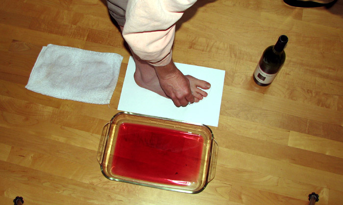 | Have your assistant draw the outline of your foot, holding the pencil at 90 degrees to the paper. |
| 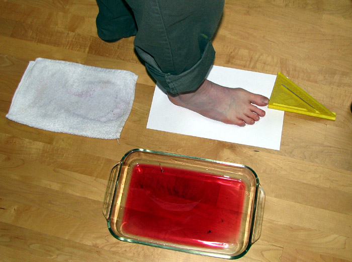 | Use the square to clearly mark the front of the foot |
| 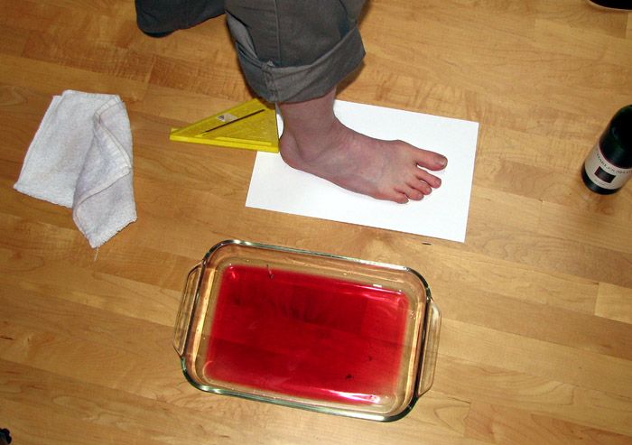 | Use the square to clearly mark the back of the foot |
| 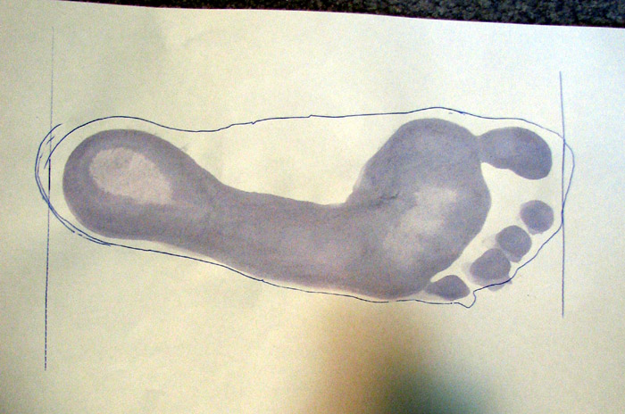 | Remove your foot, being carful not to tear the wet paper, and this is what you should have so far. Repeat this process with the other foot and allow both to dry overnight. |
| 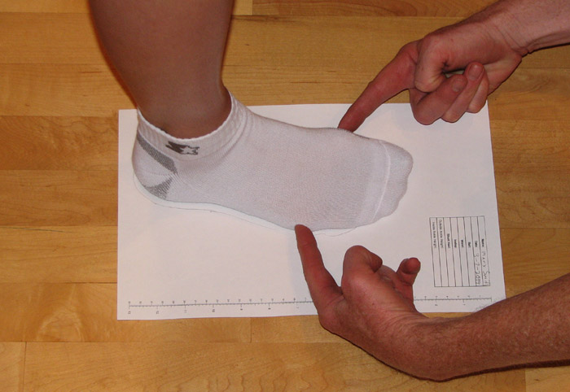 | After the prints have dried, reposition you foot on the print. Have you assistant locat the position of the ball joints of the foot below the big an little toes. * Make these measurements with socks on. Use socks that you would expect to wear with the custom shoes. In all measurements, pull the string snug but not so much as to compress the material of the sock. Take the measurements standing with weight evenly divided between you two feet. This is why it is best to have an assistant take the measurements. |
| 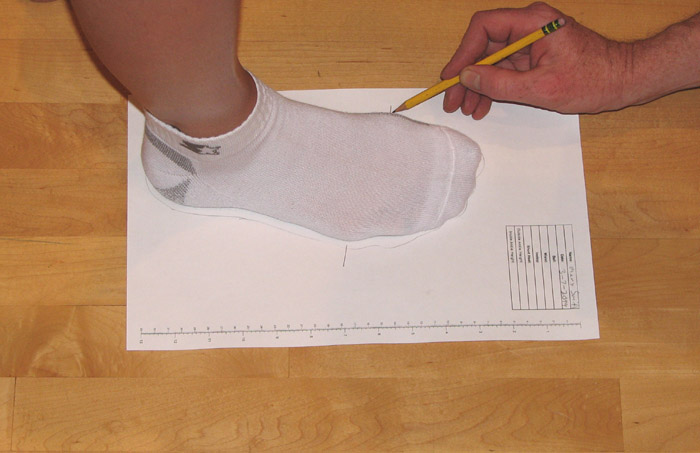 | Mark a line on the paper where these occur. |
| 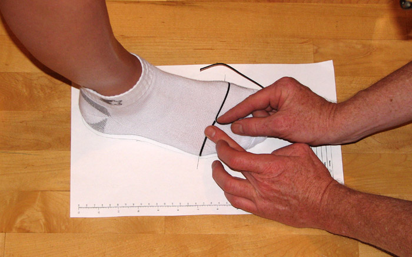 | Use the string to measure the girth of the foot passing through the two ball joint locations. |
| 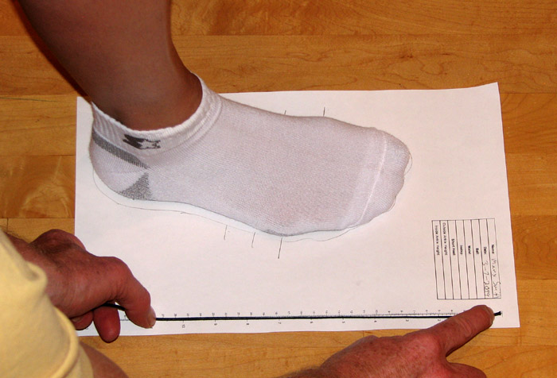 | Hold the string to a ruler to get the measurement (preferably in centimeters) and record the value on the paper as Ball= xxx. |
| 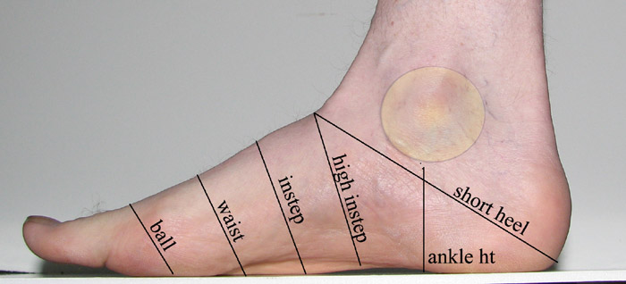 | Now we want to measure the instep. This measurement is taken as shown at the line marked instep. |
| 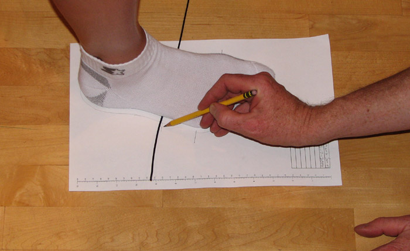 | Decide where you are going to measuure the instep and lay the string flat to mark on the paper where you took the measurement. |
| 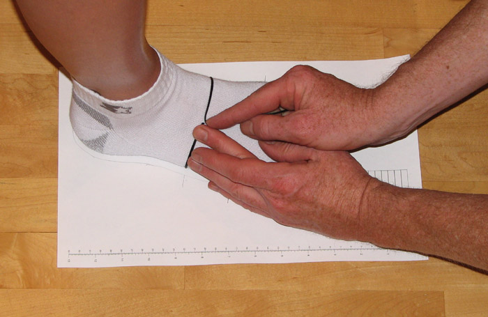 | Take the measurement and record it on the paper as Instep = xxx. |
| 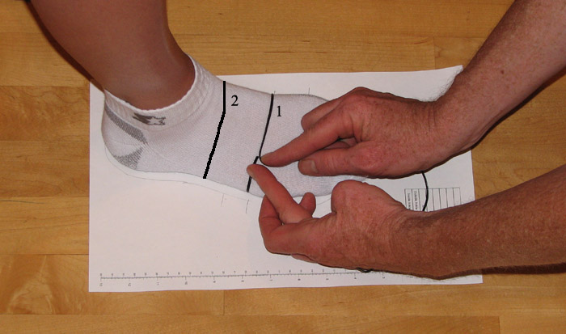 | Repeat this procedure for the waist, which is about halfway between the instep and ball. Repeat again for the High Instep which is above the instep right before the leg. * refer to the photo above that shows the positions of the various measurements. |
| 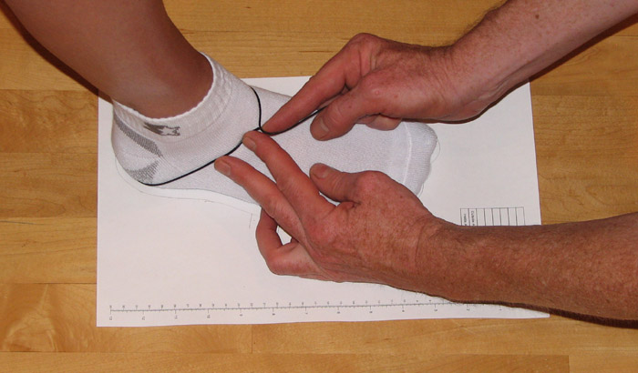 |
Measure the short heel as shown in the photo above. Record the value on the paper.
There is no need to make any mark on the paper for this one. Finally, measure the height from the floor to the bottom of your ankle bones on bothe the inside and outside of the foot. |